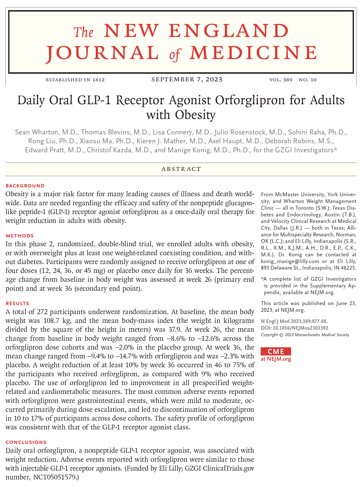

Integrating AI Assistants into Shiny Apps
Simplify Development and Enhance User Experience
AI Coding Assistants


Sidebots
Joe Cheng’s talk “Shiny x AI” at posit::conf(2024)
You just saw some awesome AI examples from Joe
New Tools for LLMs from Posit
Let’s take a few minutes to dive in
Advice from Joe
Being a mere consumer of Copilot and ChatGPT is not enough to have a well-informed opinion of the potential of LLMs (you will miss out on structured output and tool calls).
Start coding!
Advice from Joe
Advice from Joe
vs
Let’s (almost) Build a Chatbot
Let’s (almost) Build a Chatbot
library(shiny)
library(bslib)
library(shinychat) # pak::pak("jcheng5/shinychat")
ui <- page_fluid(
chat_ui("chat")
)
server <- function(input, output, session) {
greeting <- "Hello there. Let's chat!"
chat_append("chat", greeting)
observeEvent(input$chat_user_input, {
chat_append("chat", paste0("You said: ", input$chat_user_input))
})
}
shinyApp(ui, server)Let’s (almost) Build a Chatbot

Meet elmer
Meet elmer
Meet elmer
Meet elmer
library(elmer) # pak::pak("hadley/elmer")
chat <- chat_openai() # requires api key
chat$chat("Hello there")
#> Hi there! How can I assist you today?
chat$chat("Tell me a pithy coding joke.")
#> Why do programmers prefer dark mode? Because light attracts bugs!
# and now with claude
chat <- chat_claude() # requires api keyMeet elmer
library(elmer) # pak::pak("hadley/elmer")
chat <- chat_openai() # requires api key
chat$chat("Hello there")
#> Hi there! How can I assist you today?
chat$chat("Tell me a pithy coding joke.")
#> Why do programmers prefer dark mode? Because light attracts bugs!
# and now with claude
chat <- chat_claude() # requires api key
chat$chat("Please solve all my shiny app problems")
#> Of course! I'd be happy to help with any issues with your...More fun with elmer
We can easily pass images.
More fun with elmer
We can easily pass images.
library(elmer)
chat <- chat_openai(model = "gpt-4o", echo = TRUE)
img <- "https://github.com/hadley/elmer/raw/main/man/figures/logo.png"
chat$chat("What am I looking at?",
content_image_url(img))
#> This is an illustration featuring Elmer the Patchwork
#> Elephant. Elmer is known for his colorful, patchwork
#> appearance, and the image showcases a cheerful,
#> multicolored design typical of the Elmer series of
#> children's books by David McKee.More fun with elmer
We can easily pass images.
library(elmer)
chat <- chat_openai(model = "gpt-4o", echo = TRUE)
img <- "https://github.com/hadley/elmer/raw/main/man/figures/logo.png"
chat$chat("What am I looking at?",
content_image_url(img))
#> This is an illustration featuring Elmer the Patchwork
#> Elephant. Elmer is known for his colorful, patchwork
#> appearance, and the image showcases a cheerful,
#> multicolored design typical of the Elmer series of
#> children's books by David McKee.And ask follow up questions…
You can pass plots to elmer too

Let’s Build (an actual) Chatbot
library(shiny)
ui <- bslib::page_fluid(
shinychat::chat_ui("chat")
)
server <- function(input, output, session) {
chat <- elmer::chat_openai(
model = "gpt-4o-mini",
system_prompt = "You are a pithy, but helpful assistant."
)
observeEvent(input$chat_user_input, {
stream <- chat$stream_async(input$chat_user_input)
shinychat::chat_append("chat", stream)
})
}
shinyApp(ui, server)But let’s remember Joe’s advice…
Being a mere consumer of Copilot and ChatGPT is not enough to have a well-ifcormed opinion of the potential of LLMs (you will miss out on structured output and tool calls).
Start coding!
Tool Calling
An example with the weather:
To use a tool, register it first
chat$register_tool(
tool(
.fun = get_forecast,
.description = "Gets 7-day weather forecast for a city",
# typed arguments
city = type_string("The name of the city"),
state = type_string("State name or abbreviation (required)")
)
)Types: type_string(), type_integer(), type_number(), type_boolean(), type_array(), type_object(), type_enum()
get_forecast <- function(city, state) {
coords <- get_coordinates(city, state)
station <- get_nearest_station(coords$lat, coords$lon)
response <- request(station$forecast_url) |>
req_headers("Accept" = "application/json", "User-Agent" = "R Weather App (contact@example.com)") |>
req_perform() |>
resp_body_json()
map(response$properties$periods, ~ {
temp <- as.numeric(gsub("[^0-9.-]", "", .x$temperature))
list(
location = coords$location,
coordinates = list(lat = coords$lat, lon = coords$lon),
date = .x$startTime,
name = .x$name,
temp = temp,
conditions = .x$shortForecast,
detailed_forecast = .x$detailedForecast
)
})
}Structured Output
The model will adhere to a defined schema or structure
… which means …
structured output makes LLMs programmable!
Stucture Output - An Example
Stucture Output - An Example
chat <- chat_openai(model = "gpt-4o", echo = FALSE, seed = 1234)
bio_spec <- type_object(
"Person",
name = type_string("Name of the person"),
profession = type_string("Profession"),
interests = type_string("Interests"),
favorite_pkg = type_string("Favorite R package, say 'Unknown' if none")
)
joe <- chat$extract_data(bio_joe, spec = bio_spec)
joe$name
[1] "Joe Cheng"
$profession
[1] "Chief Technology Officer at Posit"
$interests
[1] "R programming, web development, cycling, family"
$favorite_pkg
[1] "Shiny"Stucture Output - An Example
chat <- chat_openai(model = "gpt-4o", echo = FALSE, seed = 1234)
bio_spec <- type_object(
"Person",
name = type_string("Name of the person"),
profession = type_string("Profession"),
interests = type_string("Interests"),
favorite_pkg = type_string("Favorite R package, say 'Unknown' if none")
)
bind_rows(
chat$extract_data(bio_joe, spec = bio_spec) |> as_tibble(), # joe's bio
chat$extract_data(bio_james, spec = bio_spec) |> as_tibble() # my bio
) |>
gt() |>
opt_stylize(style = 3)| name | profession | interests | favorite_pkg |
|---|---|---|---|
| Joe Cheng | Chief Technology Officer at Posit | R programming, web development, cycling, family | Shiny |
| James Wade | Research Scientist | Data science, chemistry, materials science, machine learning, data visualization, open-source contributions | Unknown |
Structured Output
LLMs are fantastic at converting unstructured text to structured data.

Structured Output
study_info_spec/
├── title (string)
├── authors [array]
│ └── items
│ ├── name (string)
│ └── affiliation (string)
├── published_date (string)
├── journal (string)
├── condition_addressed (string)
├── study_objective (string)
├── study_design (string)
├── participants/
│ ├── number (number)
│ ├── inclusion_criteria (string)
│ └── exclusion_criteria (string)
├── intervention/
│ ├── dosage_groups [array<number>]
│ └── duration (string)
├── outcome_measures/
│ ├── primary_endpoint (string)
│ ├── secondary_endpoints (string)
│ └── exploratory_measures (string)
├── results/
│ ├── primary_outcome (string)
│ ├── secondary_outcomes (string)
│ └── safety_and_adverse_events (string)
└── discussion/
├── efficacy_comparison (string)
├── safety_profile (string)
└── implications (string)study_info_spec <- type_object(
"Information about a medical research study",
# Basic study information
title = type_string("The title of the study."),
authors = type_array(
"List of authors with names and affiliations.",
items = type_object(
name = type_string("Name of the author."),
affiliation = type_string("Affiliation of the author.")
)
),
published_date = type_string("The date the study was published."),
journal = type_string("The journal in which the study is published."),
condition_addressed = type_string("The medical condition that is being addressed in the study."),
study_objective = type_string("The objective of the study."),
study_design = type_string("The design of the study."),
# Participant information
participants = type_object(
"Details about study participants including criteria.",
number = type_number("Number of participants in the study."),
inclusion_criteria = type_string("Inclusion criteria for participants."),
exclusion_criteria = type_string("Exclusion criteria for participants.")
),
# Intervention details
intervention = type_object(
"Details about the interventions conducted in the study.",
dosage_groups = type_array(
"Dosage groups for the intervention.",
items = type_number()
),
duration = type_string("Duration of the study intervention.")
),
# Outcome measures
outcome_measures = type_object(
"Details about the outcome measures used in the study.",
primary_endpoint = type_string("Primary outcome measurement."),
secondary_endpoints = type_string("Secondary outcome measurements."),
exploratory_measures = type_string("Exploratory outcome measurements.")
),
# Results
results = type_object(
"Results of the study.",
primary_outcome = type_string("Primary outcome of the study."),
secondary_outcomes = type_string("Secondary outcomes of the study."),
safety_and_adverse_events = type_string("Overview of safety and adverse events.")
),
# Discussion
discussion = type_object(
"Discussion and conclusions of the study.",
efficacy_comparison = type_string("Comparison of efficacy with other treatments."),
safety_profile = type_string("Safety profile comparison."),
implications = type_string("Implications of the study findings.")
)
)| name | value |
|---|---|
| title | Daily Oral GLP-1 Receptor Agonist Orforglipron for Adults with Obesity |
| authors | Sean Wharton, M.D.; Thomas Blevins, M.D.; Lisa Connery, M.D.; Julio Rosenstock, M.D.; Sohini Raha, Ph.D.; Rong Liu, Ph.D.; Xiaosu Ma, Ph.D.; Kieren J. Mather, M.D.; Axel Haupt, M.D.; Deborah Robins, M.S.; Edward Pratt, M.D.; Christof Kazda, M.D.; Manige Konig, M.D., Ph.D. |
| affiliations | McMaster University, York University, and Wharton Weight Management Clinic, Toronto; Texas Diabetes and Endocrinology, Austin; Alliance for Multispecialty Research, Norman, OK; Velocity Clinical Research at Medical City, Dallas; Eli Lilly, Indianapolis |
| journal | The New England Journal of Medicine |
| published_date | 2023-09-07 |
| condition | Obesity |
| study_objective | To evaluate the efficacy and safety of the nonpeptide GLP-1 receptor agonist orforglipron as a once-daily oral therapy for weight reduction in adults with obesity. |
| study_design | Phase 2, randomized, double-blind, placebo-controlled trial. |
| n_participants | 272 |
| inclusion_criteria | Adults with obesity, or with overweight plus at least one weight-related coexisting condition, and without diabetes. |
| exclusion_criteria | Persons with diabetes and unstable medical conditions. |
| dosage_groups | 12, 24, 36, 45 |
| duration | 36 weeks |
| primary_endpoint | Percentage change from baseline in body weight at week 26. |
| secondary_endpoints | Percentage change from baseline in body weight at week 36 and other weight-related measures. |
| exploratory_measures | Weight reduction by percentage and absolute change, changes in BMI and waist circumference. |
| primary_outcome | The mean change in body weight ranged from -8.6% to -12.6% across orforglipron dose cohorts and was -2.0% in placebo at 26 weeks. |
| secondary_outcomes | At 36 weeks, weight change ranged from -9.4% to -14.7% with orforglipron, and -2.3% with placebo. |
| safety_events | Gastrointestinal events were common but mild to moderate, leading to discontinuation in 10 to 17% of participants across dose cohorts. |
| efficacy_comparison | Orforglipron demonstrated weight reduction efficacy similar to injectable GLP-1 receptor agonists. |
| safety_profile | The safety and adverse event profile was consistent with the GLP-1 receptor agonist class. |
| implications | Orforglipron offers an oral alternative to injectable treatments for obesity, with comparable efficacy results. |
chat <- chat_openai(model = "gpt-4o") # create chat object
text <- read_pdf(file_path = "NEJMoa2302392.pdf") # extrace text from pdf
extracted_data <- chat$extract_data( # extra_data call
text,
spec = study_info_spec # pass custom spec
)
extracted_tbl <- studies_to_table(extracted_data) # convert to tableSidebots - Why are they so useful?

jameshwade.github.io/r-pharma-talk